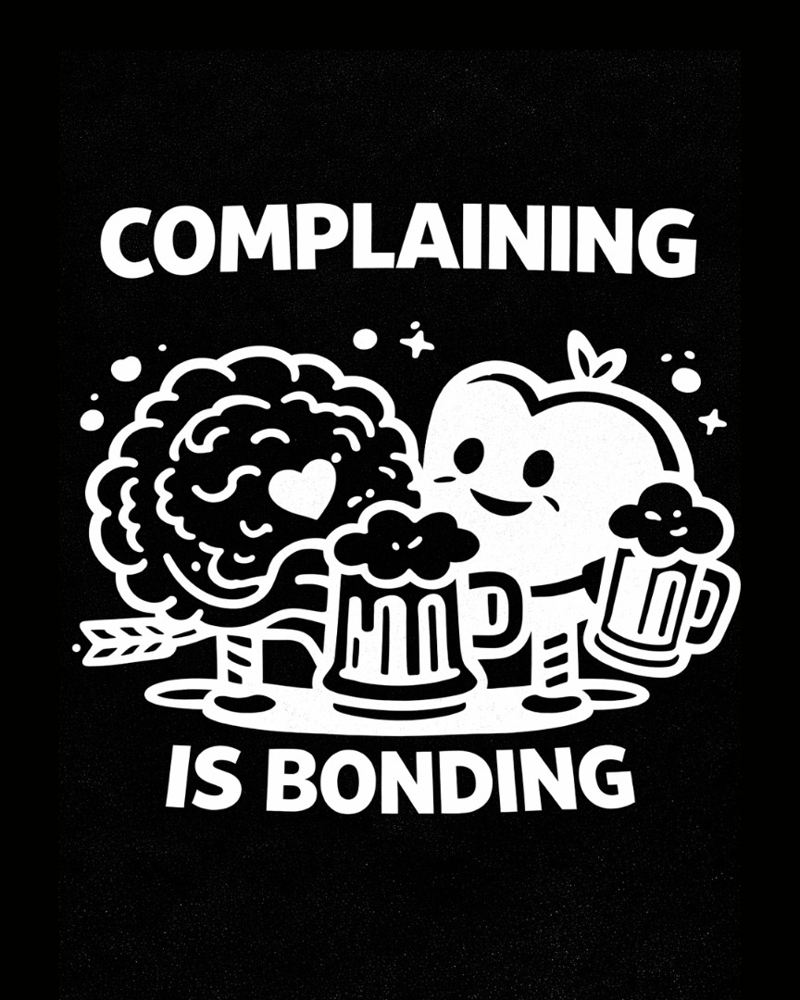
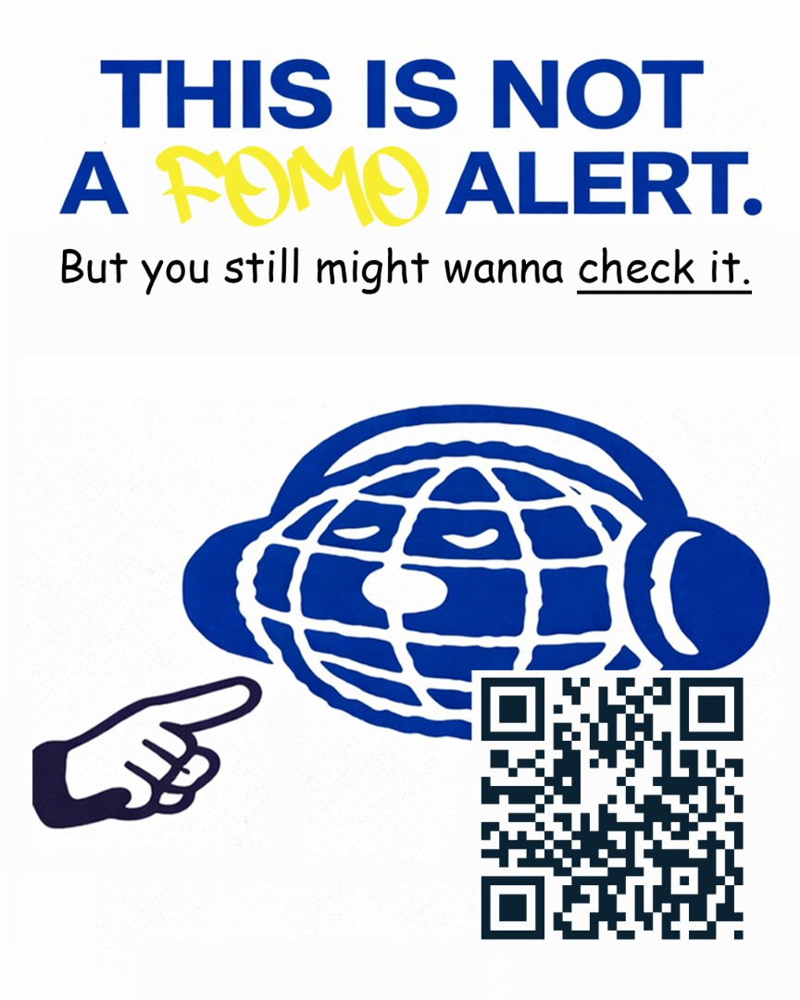
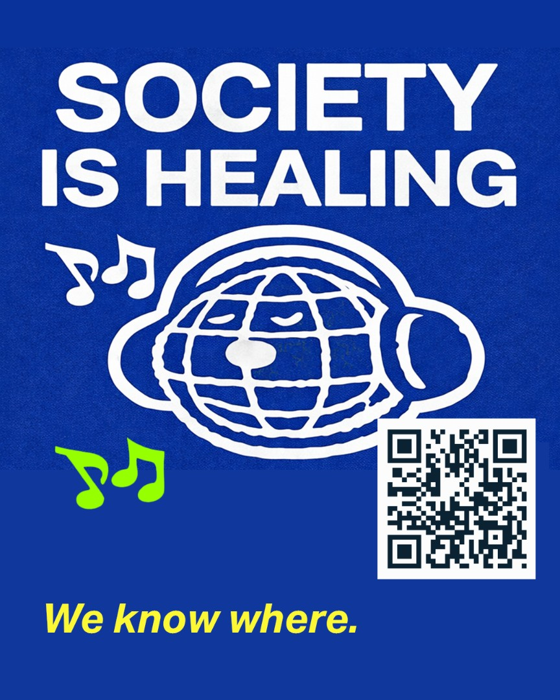

CITYLIFE
živá databáza udalostí
Mestský kultúrny sprievodca, ktorý mení plagáty na ulici na vstupnú bránu k udalostiam — naskenuješ plagát a podujatie sa otvorí. Od UX researchu cez 30 obrazoviek po živý prototyp.

UX & výskum
Prečo appka vznikla — od problému cez personas a kľúčové insighty až po end-to-end user flow.
The challenge
Tradičná komunikácia podujatí bola presýtená informáciami. Plagáty nepodnecovali k akcii a zanikali vo vizuálnom šume mesta.
Chceli rýchlejšie rozhodnutia.
Understanding users
Aby sme navrhli zmysluplnú komunikáciu, najprv sme skúmali, ako ľudia objavujú podujatia v meste.
Spontánny mestský objaviteľ
Mestský insider
Tri zistenia, ktoré držia tón
Zvedavosť spúšťa akciu rýchlejšie než informácia
V rýchlom meste ľudia málokedy čítajú detaily — reagujú na emóciu, vizuálne napätie a FOMO.
Zdieľané kultúrne referencie zvyšujú dôveru
Meme jazyk a sociálny humor pôsobia známo a autenticky; vytvárajú spojenie a zapojenie.
Mesto = sociálna sieť
Mesto je presýtené podnetmi ako feed. Plagát funguje ako „post", QR ako „swipe up".

Complaining is Bonding
Sťažovanie je v skupinách zdieľaná aktivita, ktorá posilňuje puto.

This is not a FOMO alert
Najrýchlejší spôsob, ako zasadiť myšlienku? Poprieť ju — toto JE ten FOMO alert.

Society is Healing
Z globálnej meme kultúry — fráza evokuje optimizmus a zdieľanú skúsenosť.
Z plagátu na parket
- Všimne si pútavý plagát
- Zaujme ho odvážny odkaz
- Naskenuje QR z mobilu
- Žiadne trenie, žiadne kroky
- Kurátorský, filtrovaný feed
- Rýchlo pochopí vibe a čas
- Porovná za sekundy
- Rozhodne bez premýšľania
- Príde na podujatie
- Buduje dôveru v platformu
UI & dizajn
Ako to vyzerá a funguje — živý prototyp, 31 obrazoviek a brandová DNA „organizovaný chaos".
Vyskúšaj si appku naživo
Jeden interaktívny telefón — klikaj, skenuj, swajpuj. Beží priamo z repozitára, takže pri každej zmene v kóde sa živý náhľad aktualizuje aj tu.
31 obrazoviek aplikácie
31 obrazoviek rozdelených podľa funkcie. Ťukni na ktorúkoľvek a otvorí sa vo väčšom.
Mesto × kultúra × hype × humor
Nie je to chaos — je to kontrolovaný anti-poriadok. Brutalistický, editorial, UI feeling: veľké bloky, tvrdé rámčeky, „rozbitá" symetria. Headliny vždy CAPS, max. 2 výrazné farby, bez gradientov.
Tone of voice
Typografia: Host Grotesk / Inter, headliny vždy CAPS.
Výsledok
CityLife premosťuje offline a online: plagát + QR je vstupný bod do živej databázy podujatí. Žiadna informačná štruktúra — výrazný vizuál, silné copy a okamžitá akcia.
Konkurenčná analýza to potvrdila: menší, tematicky zameraný profil generuje vyššie zapojenie než veľký inštitucionálny účet. CityLife nekomunikuje „mestu", ale komunite.
- UX case: ako premeniť mestský plagát na akčný nástroj, nie médium.
- Insight jadro — zvedavosť > informácia, kultúrne referencie budujú dôveru, mesto = sociálna sieť.
- Sociálna vrstva: vlastná crew + Tinder-swipe na akcie kamošov a ich kamošov.
- 30 obrazoviek + živý React prototyp na GitHub Pages, na brandovej DNA „organizovaný chaos".
Všetky projekty